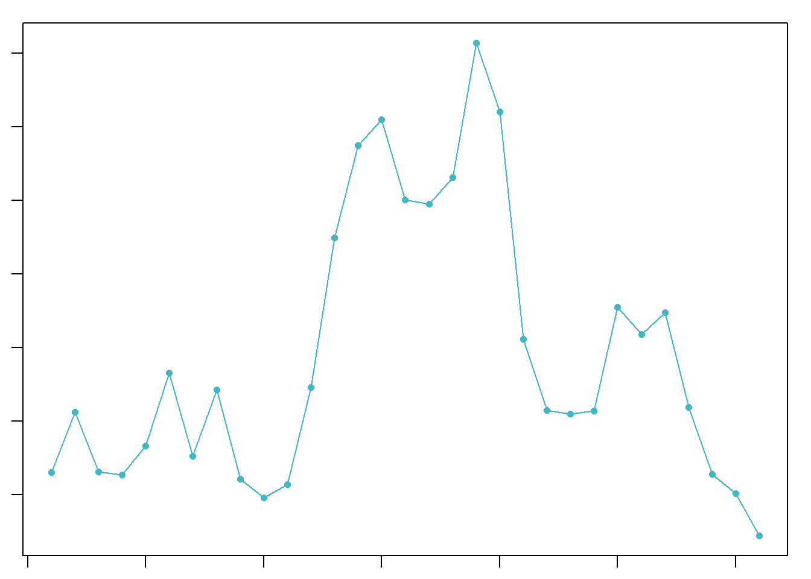
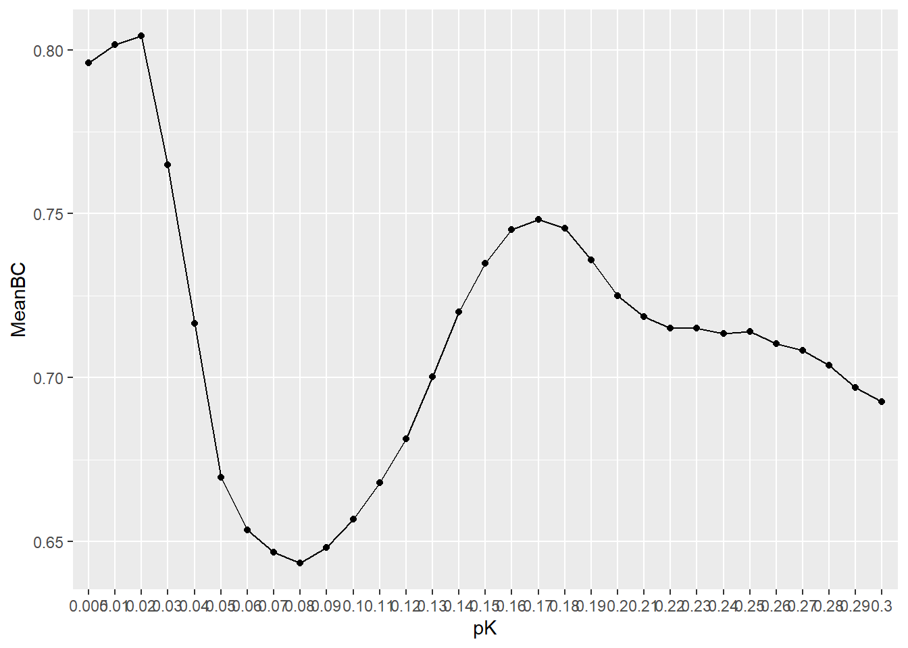

The following object is masked from 'package:utils':
findMatches
The following objects are masked from 'package:base':
expand.grid, I, unname
Loading required package: IRanges
Attaching package: 'IRanges'
The following object is masked from 'package:sp':
%over%
The following object is masked from 'package:grDevices':
windows
Loading required package: GenomeInfoDb
Loading required package: Biobase
Welcome to Bioconductor
Vignettes contain introductory material; view with
'browseVignettes()'. To cite Bioconductor, see
'citation("Biobase")', and for packages 'citation("pkgname")'.
Attaching package: 'Biobase'
The following object is masked from 'package:MatrixGenerics':
rowMedians
The following objects are masked from 'package:matrixStats':
anyMissing, rowMedians
Attaching package: 'SummarizedExperiment'
The following object is masked from 'package:Seurat':
Assays
The following object is masked from 'package:SeuratObject':
Assays
The following objects are masked from 'package:SingleR':
BlueprintEncodeData, DatabaseImmuneCellExpressionData,
HumanPrimaryCellAtlasData, ImmGenData, MonacoImmuneData,
MouseRNAseqData, NovershternHematopoieticData
# Create Seurat objectsc_Seurat <-Read10X(data.dir ="D:/Genome_Biology/Reproduce/Pre_Processed/SoupX") # Directory of corrected expression matrices processed by SoupXsc_Seurat <-CreateSeuratObject(counts = sc_Seurat)sc_Seurat_procesing <- sc_Seuratsc_Seurat_procesing
An object of class Seurat
36601 features across 3569 samples within 1 assay
Active assay: RNA (36601 features, 0 variable features)
1 layer present: counts
Calculate Percentage MT Counts
# Calculate percentage of MT countssc_Seurat_procesing[["percent.mt"]] <-PercentageFeatureSet(sc_Seurat_procesing, pattern ="^MT-")
meta <- sc_Seurat_procesing@meta.datadim(meta)
[1] 3569 4
BiocManager::install('glmGamPoi')
Bioconductor version 3.19 (BiocManager 1.30.25), R 4.4.1 (2024-06-14 ucrt)
Warning: package(s) not installed when version(s) same as or greater than current; use
`force = TRUE` to re-install: 'glmGamPoi'
Warning: The default method for RunUMAP has changed from calling Python UMAP via reticulate to the R-native UWOT using the cosine metric
To use Python UMAP via reticulate, set umap.method to 'umap-learn' and metric to 'correlation'
This message will be shown once per session
Quality MT genes
# Exclude cells that have more than 10% of mitochondrial countssc_Seurat_procesing <-subset(sc_Seurat_procesing, subset = percent.mt <10)
# Extract the cells that pass % mitochondrial cut-offsc_Seurat_procesing <-subset(sc_Seurat , cells =colnames(sc_Seurat_procesing))sc_Seurat_procesing
An object of class Seurat
36601 features across 2986 samples within 1 assay
Active assay: RNA (36601 features, 0 variable features)
1 layer present: counts
Exclude Doublet Finders
Create the function
# Function for running the standard pre-processing on Seurat objectsc_Seurat_procesing_2 <-function(input){# Apply sctransform normalizationprint("Normalize Data") input <-NormalizeData(input, verbose =FALSE)#Find variable Features print("Find variable Features") input <-FindVariableFeatures(input, selection.method ="vst", nfeatures =2000)# Scale data print("Scale data") input <-ScaleData(input)# Run PCAprint("Run PCA") input <-RunPCA(input, verbose =FALSE)# Find neighborsprint("Find Neigbors") input <-FindNeighbors(input, dims =1:30)#Find clustersprint("Find Cluster") input <-FindClusters(input, verbose =FALSE)# Run non-linear dimensional reduction (UMAP)print("Run non-linear dimensional reduction (UMAP)") input <-RunUMAP(input, dims =1:30 , verbose =FALSE)return(input)}
Spam version 2.11-0 (2024-10-03) is loaded.
Type 'help( Spam)' or 'demo( spam)' for a short introduction
and overview of this package.
Help for individual functions is also obtained by adding the
suffix '.spam' to the function name, e.g. 'help( chol.spam)'.
Attaching package: 'spam'
The following object is masked from 'package:stats4':
mle
The following objects are masked from 'package:base':
backsolve, forwardsolve
KernSmooth 2.23 loaded
Copyright M. P. Wand 1997-2009
Loading required package: ROCR
pK_value <-find.pK(sweep.stats)

NULL
Visualize pK value
# Visualize the pK value at maximum mean-variance-normalized bimodality coefficient (MeanBC) ggplot(pK_value, aes(pK, MeanBC, group =1)) +geom_point() +geom_line()

Extract pK value
# Extract the pK value at maximum mean-variance-normalized bimodality coefficient (MeanBC)max(pK_value$MeanBC)
# Exclude the doubletssc_Seurat <-subset(sc_Seurat , cells =rownames(sc_Seurat_procesing@meta.data[sc_Seurat_procesing@meta.data$DoubletFinder =="Singlet",]))sc_Seurat
An object of class Seurat
36601 features across 2867 samples within 1 assay
Active assay: RNA (36601 features, 0 variable features)
1 layer present: counts